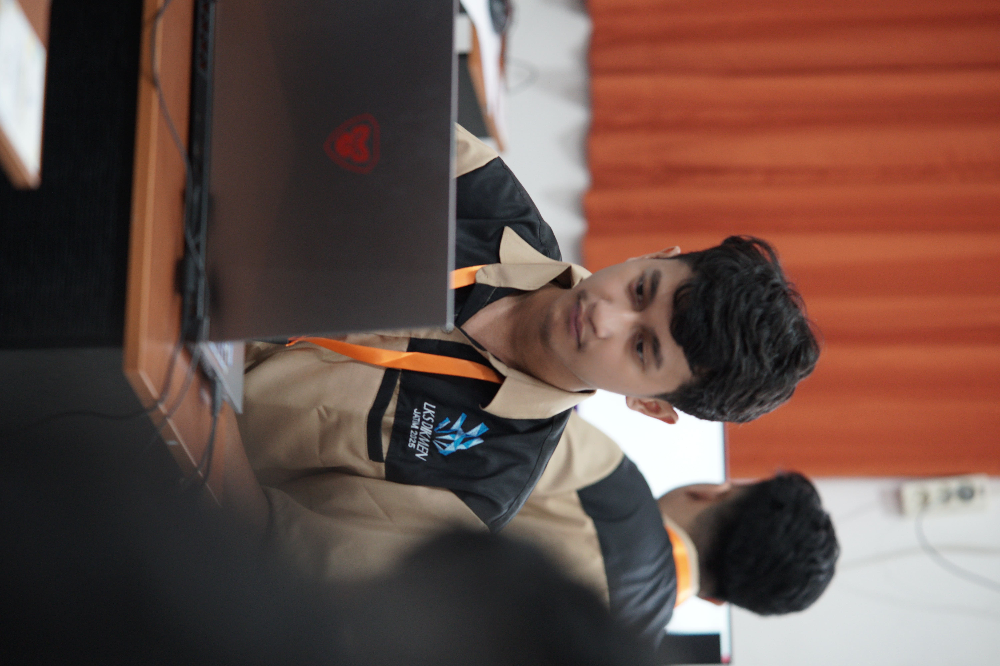

Web and Desktop Developer
Saya adalah seorang web dan desktop developer dengan pengalaman dalam membangun aplikasi yang efisien dan user-friendly. Saya memiliki keahlian dalam berbagai teknologi seperti Laravel, C#, dan Winforms, serta pengalaman dalam instalasi, konfigurasi, dan pemeliharaan perangkat keras komputer. Saya selalu bersemangat untuk belajar hal baru dan siap untuk menghadapi tantangan dalam dunia pengembangan perangkat lunak.

HTML, CSS, JavaScript, React, Vue.js
C#, .NET, Entity Framework Core
Pengalaman dalam instalasi, konfigurasi, dan pemeliharaan perangkat keras komputer.